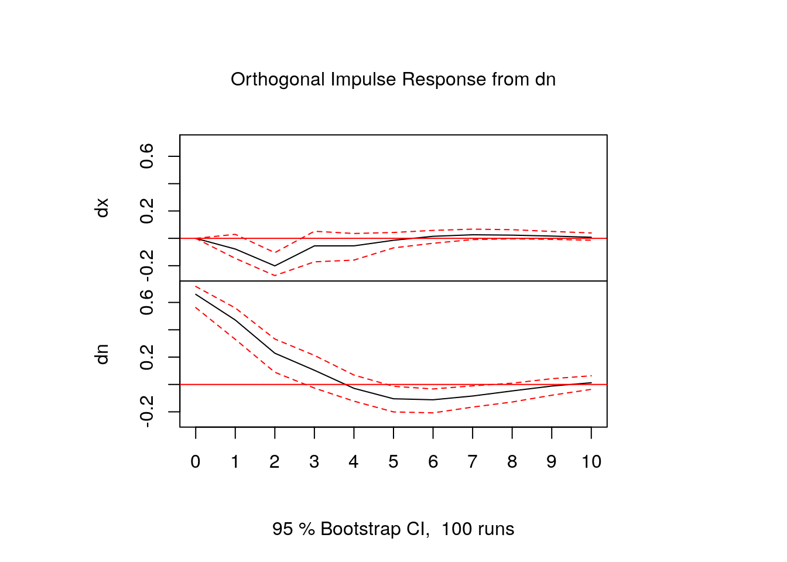

Lab to illustrate the possibilities of VAR modelling with R
We are going to use the R package vars written by Bernhard Pfaff. A short description of the functionalities of the Pfaff’s package could be found here. For a more detailed exposition, please go here
To illustrate the different topics in VAR modelling, we are going to use as an example the analysis and data used in Gali (1999) paper : "Technology, Employment, and the Business Cycle: Do Technology Shocks Explain Aggregate Fluctuations?
In his paper, Gali estimates a bivariate VAR with productivity and hours to look mainly at the response of hours to a technology shock
In fact we are going to “replicate” the Gali paper but only his benchmark model:
U.S. quarterly data for 1948:1 - 1994:4 from Citibase
bivariate VAR model: productivity(\(x_{t}\)) and hours(\(n_{t}\))
\(y_{t~}=~\left[ x_{t~},n_{t}\right] ^{^{\prime }}\), both variables in (log) first differences
To replicate in your PC the Gali analysis, copy and paste the following R script:
DATA_gali_99.csv file with the data are in Aula virtual #- 1) dowload the DATA_gali_99.csv in you PC
gali_data <- read.csv("./datos/DATA_gali_99.csv", sep = ";", header = T) #- change the path to the file
#- 2) defining the ts variables
GDP <- ts(gali_data$GDPQ, start = c(1947, 1), end = c(1994, 4), frequency = 4)
Hours <- ts(gali_data$LPMHU, start = c(1947, 1), end = c(1994, 4), frequency = 4)
Productivity <- GDP/Hours
#- 3) setting the sample
GDP <- window(GDP, start = c(1948, 1), end = c(1994, 4))
Hours <- window(Hours, start = c(1948, 1), end = c(1994, 4))
Productivity <- window(Productivity, start = c(1948, 1), end = c(1994, 4))
#- 4) Taking log's and indexing (1948:1 = 100) the variables
lGDP <- 100 + 100 * log(GDP/GDP[1])
lHours <- 100 + 100 * log(Hours/Hours[1])
lProductivity <- 100 + 100 * log(Productivity/Productivity[1])
#- 5) Taking first differences of the log-variables
dy <- diff(lGDP, lag = 1, difference = 1)
dn <- diff(lHours, lag = 1, difference = 1)
dx <- diff(lProductivity, lag = 1, difference = 1)
#- 6) Install & loading the vars package
install.packages("vars")
library(vars)
#- 7) Creating a matrix with the two series
variables <- cbind(dx, dn)
#- 8) Estimating the VAR
VAR(variables, p = 4, type = "const")Step by step the analysis will be:
#----loading data(csv format with (;) for separator and with labels or header)
gali_data <- read.csv(here::here("datos", "DATA_gali_99.csv"), sep = ";", header = TRUE)#-- str() displays the internal structure of an R object
str(gali_data[, 1:8]) #-- only for the 1:8 columns of gali_data'data.frame': 192 obs. of 8 variables:
$ GDPQ : num 1240 1247 1255 1270 1284 ...
$ LHEM : num NA NA NA NA 57976 ...
$ LPMHU: num 91.7 91.4 91.6 92.9 93.3 ...
$ P16 : num 101203 101662 102060 102386 102691 ...
$ FM2 : num NA NA NA NA NA NA NA NA NA NA ...
$ FYGM3: num 0.38 0.38 0.737 0.907 0.99 ...
$ PUNEW: num 21.7 22 22.5 23.1 23.6 ...
$ CANN : num NA NA NA NA NA NA NA NA NA NA ...The data are quarterly and runs from 1947:1 to 1994:4
The vars package only works with data in a specific format: time series or ts. To convert our data in the time series format we are going to use the ts() function in R
GDPQ is the measure of aggregate output
LPMHU is labor input (hours)
#-- creating the time series with ts(): GDP, Hours & Productivity (labor productivity)
GDP <- ts(gali_data$GDPQ, start = c(1947, 1), end = c(1994, 4), frequency = 4)
Hours <- ts(gali_data$LPMHU, start = c(1947, 1), end = c(1994, 4), frequency = 4)
Productivity <- GDP/Hours#-- Changing the start date of the series to 1948:1
GDP <- window(GDP, start = c(1948, 1), end = c(1994, 4))
Hours <- window(Hours, start = c(1948, 1), end = c(1994, 4))
Productivity <- window(Productivity, start = c(1948, 1), end = c(1994, 4))#-- Taking log's and indexing (1948:1 = 100) the variables
lGDP <- 100 + 100 * log(GDP/GDP[1])
lHours <- 100 + 100 * log(Hours/Hours[1])
lProductivity <- 100 + 100 * log(Productivity/Productivity[1])#-- Taking first differences of the log-variables
dy <- diff(lGDP, lag = 1, difference = 1)
dn <- diff(lHours, lag = 1, difference = 1)
dx <- diff(lProductivity, lag = 1, difference = 1)Finally, the two variables used in the Gali’s VAR were dx and dy: first difference of productivity and hours (both in logs) [growth rate’s of labor productivity (dx) and hours (dn)]
That is, Hours and Productivity are supposed to be I(1) variables. Obviously, Gali checked this before
The VAR is estimated using data from 1948:1 - 1994:4 for the variables dx dn
#-- You will have first to install the vars packages with: install.packages('vars')
library(vars)
variables <- cbind(dx, dn) #-- Creating a matrix with the two seriesWe are now ready to estimate the VAR model: the vars package has a function, the VAR() function, that estimate VAR models by OLS
Simply writing in the R console the following: VAR(variables, p = 4, type = "const"), we will estimate a VAR model for the 2 variables in the matrix called “variables” with a constant and 4 lags(p), … but, why 4 lags?
We have already decided which variables to include in our VAR model, the sample, if the variables are I(1) vs. I(0) , and the deterministic components . In this case we have almost finished the model specification. Almost, because … we need to decide the order of the VAR.
For a more detailed exposition go to Lütkepohl(2011), pp. 10-11
The idea is that we have to select an order(p) sufficiently large to ensure that the residuals shown no autocorrelation but without exhausting the degrees of freedom.
The order of the VAR could be selected by:
Sequential testing procedures
Model selection criteria
The package “vars” has the VARselect() function that allows to apply easily the 2nd approach to select p.
Remember that for viewing the syntax and options of an R function you could use the R args() function
If you need additional explanations you should call the R-help typing at the R console the following: ?VARselect
function (y, lag.max = 10, type = c("const", "trend", "both",
"none"), season = NULL, exogen = NULL)
NULLvariables <- cbind(dx, dn) #-- Creating a matrix with the two series
VARselect(variables, lag.max = 8, type = "const")$selection
AIC(n) HQ(n) SC(n) FPE(n)
2 2 1 2
$criteria
1 2 3 4 5 6
AIC(n) -1.5849704 -1.6556248 -1.6258129 -1.6125929 -1.612723 -1.6200352
HQ(n) -1.5416478 -1.5834204 -1.5247267 -1.4826249 -1.453873 -1.4323036
SC(n) -1.4781307 -1.4775586 -1.3765202 -1.2920736 -1.220977 -1.1570629
FPE(n) 0.2049551 0.1909782 0.1967674 0.1994038 0.199406 0.1979932
7 8
AIC(n) -1.6087278 -1.5938218
HQ(n) -1.3921144 -1.3483267
SC(n) -1.0745290 -0.9883966
FPE(n) 0.2002998 0.2033812Finally, we are now ready to estimate our VAR with p=4. Let’s go!!!
#- we are saving the estimation results in the object 'our_var'
our_var <- VAR(variables, p = 4, type = "const")summary()
VAR Estimation Results:
=========================
Endogenous variables: dx, dn
Deterministic variables: const
Sample size: 183
Log Likelihood: -361.495
Roots of the characteristic polynomial:
0.7609 0.7609 0.4955 0.4955 0.4125 0.3886 0.3886 0.04377
Call:
VAR(y = variables, p = 4, type = "const")
Estimation results for equation dx:
===================================
dx = dx.l1 + dn.l1 + dx.l2 + dn.l2 + dx.l3 + dn.l3 + dx.l4 + dn.l4 + const
Estimate Std. Error t value Pr(>|t|)
dx.l1 -0.096398 0.076313 -1.263 0.2082
dn.l1 -0.118188 0.075043 -1.575 0.1171
dx.l2 0.175137 0.078470 2.232 0.0269 *
dn.l2 -0.231832 0.092432 -2.508 0.0131 *
dx.l3 0.032485 0.076911 0.422 0.6733
dn.l3 0.114524 0.092560 1.237 0.2176
dx.l4 0.009445 0.076295 0.124 0.9016
dn.l4 -0.016682 0.076980 -0.217 0.8287
const 0.389255 0.083809 4.645 6.7e-06 ***
---
Signif. codes: 0 '***' 0.001 '**' 0.01 '*' 0.05 '.' 0.1 ' ' 1
Residual standard error: 0.6734 on 174 degrees of freedom
Multiple R-Squared: 0.1575, Adjusted R-squared: 0.1187
F-statistic: 4.065 on 8 and 174 DF, p-value: 0.0001858
Estimation results for equation dn:
===================================
dn = dx.l1 + dn.l1 + dx.l2 + dn.l2 + dx.l3 + dn.l3 + dx.l4 + dn.l4 + const
Estimate Std. Error t value Pr(>|t|)
dx.l1 0.30492 0.07547 4.040 8e-05 ***
dn.l1 0.71481 0.07422 9.631 <2e-16 ***
dx.l2 0.05422 0.07761 0.699 0.4857
dn.l2 -0.12814 0.09142 -1.402 0.1628
dx.l3 0.02442 0.07607 0.321 0.7485
dn.l3 0.10069 0.09154 1.100 0.2729
dx.l4 0.05498 0.07546 0.729 0.4672
dn.l4 -0.13815 0.07613 -1.815 0.0713 .
const 0.07376 0.08289 0.890 0.3748
---
Signif. codes: 0 '***' 0.001 '**' 0.01 '*' 0.05 '.' 0.1 ' ' 1
Residual standard error: 0.666 on 174 degrees of freedom
Multiple R-Squared: 0.4759, Adjusted R-squared: 0.4518
F-statistic: 19.75 on 8 and 174 DF, p-value: < 2.2e-16
Covariance matrix of residuals:
dx dn
dx 0.45344 -0.06341
dn -0.06341 0.44351
Correlation matrix of residuals:
dx dn
dx 1.0000 -0.1414
dn -0.1414 1.0000[[1]]
dx.l1 dn.l1
dx -0.09639832 -0.1181884
dn 0.30492251 0.7148050
[[2]]
dx.l2 dn.l2
dx 0.1751366 -0.2318322
dn 0.0542222 -0.1281375
[[3]]
dx.l3 dn.l3
dx 0.03248468 0.1145240
dn 0.02442320 0.1006887
[[4]]
dx.l4 dn.l4
dx 0.009444778 -0.01668181
dn 0.054984423 -0.13815029
#- Checking stability(eigenvalues of the companion coefficient matrix must have modulus less than 1)
roots(our_var, modulus = TRUE) #-- Returns a vector with the eigenvalues[1] 0.76092599 0.76092599 0.49550808 0.49550808 0.41252822 0.38858444 0.38858444
[8] 0.04376503#-- We can access fitted-Y with fitted()
print(fitted(our_var)[1:4, ]) #---- Y-fitted fot the first 4 observations dx dn
1 1.0117163 -0.6248601
2 1.0254013 -0.5451213
3 0.7838393 0.1710223
4 0.9547305 -0.2437604#-- We can access the residuals with residuals()
print(residuals(our_var)[1:4, ]) #-- print the four first residuals dx dn
1 0.3374632 -0.9774587
2 0.8121841 -0.4816300
3 -0.4217890 -1.3515856
4 1.6152363 1.3684236#-- We can test autocorrelation and normality of residuals
serial.test(our_var, lags.pt = 8) #-- 8 lags for autocorrelation portmanteau test
Portmanteau Test (asymptotic)
data: Residuals of VAR object our_var
Chi-squared = 24.955, df = 16, p-value = 0.07061$dx
JB-Test (univariate)
data: Residual of dx equation
Chi-squared = 68.644, df = 2, p-value = 1.221e-15
$dn
JB-Test (univariate)
data: Residual of dn equation
Chi-squared = 3.6281, df = 2, p-value = 0.163
$JB
JB-Test (multivariate)
data: Residuals of VAR object our_var
Chi-squared = 75.873, df = 4, p-value = 1.332e-15
$Skewness
Skewness only (multivariate)
data: Residuals of VAR object our_var
Chi-squared = 16.763, df = 2, p-value = 0.000229
$Kurtosis
Kurtosis only (multivariate)
data: Residuals of VAR object our_var
Chi-squared = 59.109, df = 2, p-value = 1.461e-13#-- There is a function plot or method associated to the autocorrelation test
our_serial <- serial.test(our_var, lags.pt = 8) #-saving our autocorr.test in object 'our_serial'
plot(our_serial)
The two principal uses of VAR models in reduced form are testing (causality testing) and forecasting, BUT the most used instruments in the VAR methodology are IRF & FEVD.
IRF & FEVD only have a clear meaning if we transform our reduced form VAR model to an structural VAR. We will develop this idea in a while
After validation, the VAR could be used for testing, for example, for testing Granger causality
As we said, if the residuals are normally distributed (Gaussian) like (\(v_{t}\rightarrow N(0,\Sigma _{v})\)) the OLS estimator has desirable asymptotic properties. In particular, it will be asymptotically normally distributed, and then, if the VAR is stable, usual inference procedures are asymptotically valid: t-statistics could be used for inference about individual parameters and F-test for testing hypothesis for sets of parameters.
Granger causality: Granger called a variable X causal for Y if the information in past and present values of X is helpful for improving the forecast of Y. If Granger causality holds, this does not guarantee that X causes Y. But, it suggests that X might be causing Y.
In the context of VAR models, if we want to test for Granger-causality, we need to test zero constraints in some of the coefficients.
Sometimes econometricians use the shorter terms causes as shorthand for Granger causes. You should notice, however, that Granger causality is not causality in a deep sense of the word. It just talk about linear prediction, and it only has “teeth” if we only find Granger causality in one direction.
The definition of Granger causality did not mention anything about possible instantaneous correlation between variables. If the innovations are correlated we will say that there exits instantaneous causality
It’s possible to test Granger causality through Wald or F-test. In the vars package:
It uses F-test to test Granger causality
Wald test for instantaneous Granger causality (non zero correlation among the \(v_{it}\))
#-- We can test Granger causality
causality(our_var, cause = c("dx")) #-- dx Granger-cause the other(s) variables?$Granger
Granger causality H0: dx do not Granger-cause dn
data: VAR object our_var
F-Test = 4.6524, df1 = 4, df2 = 348, p-value = 0.001138
$Instant
H0: No instantaneous causality between: dx and dn
data: VAR object our_var
Chi-squared = 3.5873, df = 1, p-value = 0.05822$Granger
Granger causality H0: dn do not Granger-cause dx
data: VAR object our_var
F-Test = 5.407, df1 = 4, df2 = 348, p-value = 0.0003106
$Instant
H0: No instantaneous causality between: dn and dx
data: VAR object our_var
Chi-squared = 3.5873, df = 1, p-value = 0.05822$dx
fcst lower upper CI
[1,] 0.3691718 -0.9506215 1.688965 1.319793
[2,] 0.1583605 -1.1744143 1.491135 1.332775
[3,] 0.2929821 -1.1194967 1.705461 1.412479
$dn
fcst lower upper CI
[1,] 0.8210940 -0.4841807 2.126369 1.305275
[2,] 0.5611573 -1.0605790 2.182894 1.621736
[3,] 0.5069927 -1.1949360 2.208921 1.701929A stationary (stable) VAR could be transformed (inverted) in an infinite MA(\(\infty\)) process
By inverting the autoregressive polynomial A(L) we can obtain the VMA form of a VAR like:
\[y_{t}~=C_{0}v_{t}+C_{1}v_{t-1}+C_{2}v_{t-2}+\ ...\ [3]\]
Being \(C_{0}=I_{K}\), the rest of the \(C_{s}\) matrices could be computed recursively
\[y_{t}=C(L)v_{t}\ \ \ \ \ \ \ \ \ \ \ \ [4]\]
being \(C(L)=(I_{K}+C_{1}L^{1}+C_{2}L^{2}+\ \ ...)\).
First, test’s do it by hand (but with a little help from R).
Acoef() function#--- Using the vars package to estimate the VAR
our_var <- VAR(variables, p = 4, type = "const") #-- estimation of the VAR
AA <- Acoef(our_var) #-- saving the A matrices in AA
AA1 <- AA[[1]] #-- AA1
AA2 <- AA[[2]] #-- AA2
AA3 <- AA[[3]] #-- AA3
AA4 <- AA[[4]] #-- AA3vars package2a) By hand: we could obtain the VMA matrices, the \(C_{i}\), with R with the Psi() function; but by hand it would be as:
\(C_{0}=I_{K}\),
the rest of the \(C_{s}\) matrices could be computed recursively as
\[C_{s}=\underset{j=1}{\overset{s}{\sum }}C_{s-j}A_{j}\]
#-------------------------obtaining the C(i) matrices of the VMA representation
CC0 <- diag(2) #-- C(O) is the identity matrix (2x2)
CC1 <- CC0 %*% AA1
CC2 <- CC1 %*% AA1 + CC0 %*% AA2
CC3 <- CC2 %*% AA1 + CC1 %*% AA2 + CC0 %*% AA3
CC4 <- CC3 %*% AA1 + CC2 %*% AA2 + CC1 %*% AA3 + CC0 %*% AA4
CC5 <- CC4 %*% AA1 + CC3 %*% AA2 + CC2 %*% AA3 + CC1 %*% AA4 + CC0
2b) Using the vars package: we have to use the Phi() function
#--- Wold VMA of our_var with the vars package
Phi(our_var, nstep = 3) #- shows the WOLD VMA estimated matrices. (by inverting the A's matrices), , 1
[,1] [,2]
[1,] 1 0
[2,] 0 1
, , 2
[,1] [,2]
[1,] -0.09639832 -0.1181884
[2,] 0.30492251 0.7148050
, , 3
[,1] [,2]
[1,] 0.1483909 -0.3049207
[2,] 0.2427883 0.3467704
, , 4
[,1] [,2]
[1,] -0.09808845 -0.08348028
[2,] 0.19891831 0.15758298Let’s check if our calculation by hand coincide with the one obtained using the vars package. Our (by hand) CC2 matrix is:
dx.l1 dn.l1
[1,] 0.1483909 -0.3049207
[2,] 0.2427883 0.3467704
The two principal instruments of VAR’s, IRF & FEVD, are defined in terms of their VMA representation [3]
IRF & FEVD will show the effects of a shock, BUT in order to have a clear meaning, they must be interpreted under the assumption that all the other shocks are held constant; however, in the Wold representation the shocks are not orthogonal; that’s why we will turn our attention to the Structural VAR models
Usually the main interest in VAR modelling is to look at the dynamic effect of a shock on the variables of interest
This dynamic effect could be easily obtained through the VMA representation [3] of the VAR
In particular the response of the variable \(y_{n}\) to an impulse of size one in \(v_{m}\) \(j\)-periods ahead is given by the \((n,m)\)-th element of \(C_{j}\). That is, the matrices \(C_{i}\) contain the responses of the variables to the innovations for different periods (or steps) ahead
In practice, imposing a recursive contemporaneous order among the variables of the VAR model, is operationalised performing a Cholesky decomposition in \(\Sigma _{v}\).
The Cholesky factor, \(P\), of \(\Sigma _{v}\) is defined as the unique lower triangular matrix such that \(PP^{^{\prime }}=\Sigma _{v}\)
\[A(L)y_{t}=PP^{-1}v_{t}\]
with \(\varepsilon _{t}=P^{-1}v_{t}\), then our transformed VAR becomes
\[A(L)y_{t}=P\varepsilon _{t}\ \ \ \ \ \ \ \ \ \ \ \ [2*]\]
That is, we have written our VAR in terms of a new vector of shocks \(\varepsilon _{t}\), with identity covariance matrix (\(\Sigma _{\varepsilon }=I\))
Now, as the \(\varepsilon _{t}\) shocks are uncorrelated their IRF would have a clear interpretation
\[y_{t}=C(L)P\varepsilon _{t}\ \ \ \ \ \ \ \ \ \ \ \ [5\ast ]\]
\[y_{t}=D(L)\varepsilon _{t}\ \ \ \ \ \ \ \ \ \ \ \ [5]\]
being \(D(L)=C(L)P\) ,
\(D(L)=(D_{0}+D_{1}L^{1}+D_{2}L^{2}+D_{3}L^{3}-\ \ ...)\), with \(D_{i}=C_{i}P\) ,
then \(D_{0}=C_{0}P=I_{N}P=P\)
As \(D_{0}=P\), and P is lower triangular, the system is recursive: the first shock (\(\varepsilon _{t}^{1}\)) could have an instantaneous effect on all the variables of the VAR, while the first variable in the VAR could only be affected contemporaneously by \(\varepsilon _{t}^{1}\)
The matrices \(D_{i}\) contains the response of the variables to the \(\varepsilon _{t}\)
In particular the response of the variable \(y_{n}\) to an impulse of size one in \(\varepsilon_{m}\) \(j\)-periods ahead is given by the \((n,m)\)-th element of \(D_{j}\).
Don’t worry too much now because firstly we will usually do this with R and secondly because we are going to practice the calculations by hand at the Lab, but ….
3a) By hand
VVu <- summary(our_var)[[3]] #-- The variance-covariance matrix of the residuals
PP_chol <- t(chol(VVu)) #-- Cholesky factor (matrix P in our terminology)
DD1 <- CC1 %*% PP_chol
DD2 <- CC2 %*% PP_chol
DD3 <- CC3 %*% PP_chol3b) We have to use the Psi() function (Note that the function is Psi(), not the previous Phi() ) function
, , 1
[,1] [,2]
[1,] 0.67337627 0.0000000
[2,] -0.09417032 0.6592771
, , 2
[,1] [,2]
[1,] -0.0537825 -0.07791893
[2,] 0.1380142 0.47125458
, , 3
[,1] [,2]
[1,] 0.1286374 -0.2010272
[2,] 0.1308324 0.2286178
, , 4
[,1] [,2]
[1,] -0.05818907 -0.05503664
[2,] 0.11910723 0.10389086Let’s check our DD3 with the calculations made with the var package.
dx dn
[1,] -0.05818907 -0.05503664
[2,] 0.11910723 0.10389086irf(our_var, impulse = "dx", response = c("dx", "dn"), boot = FALSE, n.ahead = 6,
ortho = TRUE, cumulative = FALSE)
Impulse response coefficients
$dx
dx dn
[1,] 0.673376268 -0.09417032
[2,] -0.053782498 0.13801416
[3,] 0.128637414 0.13083241
[4,] -0.058189069 0.11910723
[5,] 0.005719843 0.12022354
[6,] -0.036212427 0.06355445
[7,] -0.020107696 0.01886216
FEVD : Forecast error variance decomposition
Once we have orthogonalised IRF’s (the \(D_{i}\) matrices ), the FEVD can be easily computed. Let’s see how:
\[y_{T+h}-y_{T+h\mid T}=D_{0}\varepsilon _{T+h}+D_{1}\varepsilon_{T+h-1}+\cdots +D_{h-1}\varepsilon _{T+1}\]
As \(\Sigma _{\varepsilon }=I\), the forecast error variance of the k-th component of \(y_{T+h}\) is:
\[\sigma _{k}^{2}(h)=\overset{h-1}{\underset{j=0}{\sum }}(d_{k1,j}^{2}+\cdots +d_{kK,j}^{2})=\overset{K}{\underset{j=1}{\sum }}(d_{kj,0}^{2}+\cdots +d_{kj,h-1}^{2})\]
where \(d_{nm,j}\) denotes the \((n,m)-th\) element of \(D_{j}\).
The quantity \((d_{kj,0}^{2}+\cdots +d_{kj,h-1}^{2})/\sigma _{k}^{2}(h)\) represents the contribution of the \(j\)-th shock to the h-step forecast error variance of variable \(k\).
Don’t worry too much now because firstly we will usually do this with R and secondly because we are going to practice the calculations by hand at the Lab, but ….
The FEVD are obtained through the IRF. Let’s see the FEVD and we will calculate it latter by hand:
$dx
dx dn
[1,] 1.0000000 0.00000000
[2,] 0.9868699 0.01313012
[3,] 0.9104987 0.08950130
[4,] 0.9058296 0.09417038
[5,] 0.9007024 0.09929755
[6,] 0.9006125 0.09938748
$dn
dx dn
[1,] 0.01999496 0.9800050
[2,] 0.04077447 0.9592255
[3,] 0.05972348 0.9402765
[4,] 0.07601943 0.9239806
[5,] 0.09275743 0.9072426
[6,] 0.09603517 0.9039648irf() functionirf(our_var, impulse = c("dx", "dn"), response = "dx", boot = FALSE, n.ahead = 3,
ortho = TRUE, cumulative = FALSE)
Impulse response coefficients
$dx
dx
[1,] 0.67337627
[2,] -0.05378250
[3,] 0.12863741
[4,] -0.05818907
$dn
dx
[1,] 0.00000000
[2,] -0.07791893
[3,] -0.20102724
[4,] -0.05503664fevd() functionfevd() function to calculate the FEVD
$dx
dx dn
[1,] 1.0000000 0.00000000
[2,] 0.9868699 0.01313012
[3,] 0.9104987 0.08950130
[4,] 0.9058296 0.09417038
$dn
dx dn
[1,] 0.01999496 0.9800050
[2,] 0.04077447 0.9592255
[3,] 0.05972348 0.9402765
[4,] 0.07601943 0.9239806our_irfs <- irf(our_var, n.ahead = 5) #-- our_irfs will contain all the information about IRF
# str(our_irfs) #--- looking inside the object 'our_irfs'
class(our_irfs)[1] "varirf"With class(our_irfs) we have seen that our_irfs is an object of class “varirf”. Pfaff defined this type of object to allocate space to save the IRF’s
OK, our_irfs is an object of class “varirf, but with str(our_irfs) we can look at the internal structure of the object”our_irfs" and we can see that in fact is a list of 13 elements. Too many for our purposes, then let’s concentrate only in the first element that contains the true IRF.
Let’s save the first element of our_irfs to look inside again
List of 2
$ dx: num [1:6, 1:2] 0.67338 -0.05378 0.12864 -0.05819 0.00572 ...
..- attr(*, "dimnames")=List of 2
.. ..$ : NULL
.. ..$ : chr [1:2] "dx" "dn"
$ dn: num [1:6, 1:2] 0 -0.0779 -0.201 -0.055 -0.0547 ...
..- attr(*, "dimnames")=List of 2
.. ..$ : NULL
.. ..$ : chr [1:2] "dx" "dn"we can see that our_IRF1 is a list with 2 elements. The first one our_IRF1[[1]] contains the responses of the first variable to the two shocks. The second our_IRF1[[2] contains the responses of the second variable to the two shocks
Let’s concentrate only on the movement (or responses) of the first variable (dx). The FEVD of the first variable is calculated as:
dx_e1 <- our_IRF1[[1]][, 1] #-- effect of the 1st shock in the first variable (dx)
dx_e2 <- our_IRF1[[2]][, 1] #-- effect of the 2nd shock in the first variable (dx)
d2x_e1 <- dx_e1^2 #-- IRF to the square (why?)
d2x_e2 <- dx_e2^2 #-- IRF to the square
ac_d2x_e1 <- cumsum(d2x_e1) #-- accumulating the squared IRF (why?)
ac_d2x_e2 <- cumsum(d2x_e2) #-- accumulating the squared IRF
fevd_dx_e1 = ac_d2x_e1/(ac_d2x_e1 + ac_d2x_e2) #-- % of the FEV explained by the 1st shock
fevd_dx_e2 = ac_d2x_e2/(ac_d2x_e1 + ac_d2x_e2) #-- % of the FEV explained by the 2nd shock[1] 0.673376268 -0.053782498 0.128637414 -0.058189069 0.005719843[1] 0.00000000 -0.07791893 -0.20102724 -0.05503664 -0.05474057[1] 0.000000000 0.006071360 0.040411950 0.003029032 0.002996530[1] 0.00000000 0.00607136 0.04648331 0.04951234 0.05250887
[1] 1.0000000 0.9868699 0.9104987 0.9058296[1] 0.00000000 0.01313012 0.08950130 0.09417038$dx
dx dn
[1,] 1.0000000 0.00000000
[2,] 0.9868699 0.01313012
[3,] 0.9104987 0.08950130
[4,] 0.9058296 0.09417038
$dn
dx dn
[1,] 0.01999496 0.9800050
[2,] 0.04077447 0.9592255
[3,] 0.05972348 0.9402765
[4,] 0.07601943 0.9239806